NONMEM Users Guide Part V - Introductory Guide - Chapter 6
1. What This Chapter is About
2. Data Sets for NONMEM
2.1. Data Records
2.2. Data Items
2.3. Clinical Data and Data Conversion
3. Data Sets for PREDPP
4. The $DATA Record
5. The $INPUT Record
5.1. Data Item Labels
5.2. Reserved Labels and Synonyms
5.3. Dropping Data Items via DROP
6. NONMEM Data Items
6.1. DV Data Item
6.2. ID Data Item for Population Data
6.3. MDV data item
7. PREDPP Data Items
7.1. TIME Data Item
7.2. AMT, RATE, SS, II: Dose-related Data Items
7.3. EVID Data Item
7.4. CMT and PCMT Data Items
7.5. CALL Data Item
8. Describing Doses to PREDPP
8.1. Dose-related Data Items
8.2. Different Kinds of Doses
8.2.1. Instantaneous Bolus Doses
8.2.2. Infusions
8.2.3. Steady-State Doses
8.2.4. Steady-State with Multiple Bolus Doses
8.2.5. Steady-State with Multiple Infusions
8.2.6. Steady-State with Constant Infusion
8.2.7. Multiple Steady-State Doses
8.2.8. Combining Non-Steady-State Doses withSteady-State Doses
9. The Output Compartment: Urine Collections andObservations
10. The Data Preprocessor
10.1. Day-time Translation
10.1.1. TIME Data Item
10.1.2. DATE Data Item
10.1.3. Calendar Dates
10.1.4. Converting Hours to Days and More GeneralConversions
10.1.5. The Year 2000 - LAST20
10.1.6. Leap Year Warning - LYWARN
10.2. Interdose Interval (II) Conversion
10.3. Data Items Generated by the Data Preprocessor
10.4. When Must a Format Specification be Included orOmitted?
10.5. Skipping Data Items
NONMEM Users Guide Part V - Introductory Guide - Chapter 6
Chapter 6 -
Data Sets, $DATA and $INPUT Records, and the Data
Preprocessor
1. What This Chapter is About
This chapter tells how to
create data for analysis by NONMEM-PREDPP. It tells how to
describe the data using $DATA and $INPUT records. The
requirements for formatting the data for NONMEM-PREDPP are
somewhat more stringent than are the requirements for
formatting the data for NM-TRAN. The Data Preprocessor is a
component of NM-TRAN which modifies the data so that it
becomes formatted appropriately for
NONMEM-PREDPP.
2. Data Sets for NONMEM
2.1. Data Records
A data set for NONMEM
analysis consists of a series of records ("lines"
in the terminology of editing programs). Each record must
consist of a fixed number of data items and each must have
the same format. Figure 6.1 shows how such a data set may be
pictured. In data base terminology, this is a
"flat" structure.
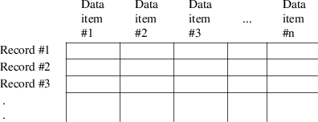
Figure 6.1. A NONMEM
input data set. Each data record is a row; each type of data
item is in a different column.
NONMEM imposes no limit on the
number of records in the data set. It does not (nor does
PREDPP or NM-TRAN) sort the data records before processing
them, so the data records must already be in the correct
sequence.
NM-TRAN may be instructed to
omit records. See the DROP and IGNORE options of the $DATA
record, below,
With NONMEM 7.5, PRED may also
instruct NONEMEM to omit records. See PRED_IGNORE_DATA in
Chapter 12, Section 6.1.
2.2. Data Items
NONMEM reads records from the
data set with a FORTRAN FORMAT specification, and so each
data item must occupy a fixed number of character positions.
Data items are always numbers. However, if no particular
number is appropriate for a given data item on a given
record, the data item is called a null data item; it
may be given the numerical value 0 or the nonnumerical value
".", or left blank. Zero’s were used in the
first two lines of the Theophylline example of Chapter 2,
which appeared as follows:
2 320. 0. 0.
2 0. .27 1.71
The Data Preprocessor allows each value in the data set to
occupy only as many character positions as it needs, so long
as the data items are separated by blanks (spaces) or
commas. Tab characters may also be used as separators if
they are stored as explicit characters, e.g., ASCII 011,
although this is platform-dependent and should be tested
carefully. When there are no commas or tabs, the value
"." or 0 must be used to hold the place of
a null data item. The two lines above could have been
entered as follows:
2 320. 0. 0.
2,,.27,1.71
(Note the use in the second line of adjacent commas
",," to denote a null data item.)
The contents of the data items
must be purely numeric; i.e., character values such as Y, N,
M or F may not be recorded. Instead, numeric codes such as 0
or 1 must be used.
With NONMEM VI, the number of
data items per data record is given by constant PD in file
SIZES. The default value is 20. With NONMEM 7.1, the default
value is 50. With NONMEM 7.2, there is no limit on the
number of data items per data record. If the value in SIZES
is not sufficient, a larger value may be specified on the
$SIZES record.
2.3. Clinical Data and Data Conversion
Clinical data often has a
"hierarchical" file structure, with (say) two
record formats: a patient record, containing fixed
information about a patient (ID number, sex, age, prior
history of smoking or drug use, etc), followed by one or
more visit records, containing doses and physical
observations during the course of the study. Visit records
may not even contain the same number of items as patient
records, nor have the same format. The hierarchy is shown
schematically in figure 6.2.
Patient record
Visit record
Visit record
...
Patient record
Visit record
Visit record
...
Figure 6.2. A
hierarchical data file. Patient and visit records have
different formats.
NONMEM cannot accept such data.
For NONMEM, the (fixed) information on the
"patient" record must be copied onto every
"visit" record, and the "patient"
records must be eliminated. This is the user’s
responsibility and is typically done in a one-time data
conversion step using the system editor and/or a specially
written computer program. If an individual’s data is
to be deleted because he did not complete the study or had
an adverse outcome, it should be done at this time. In
addition, numeric codes should be substituted for alphabetic
codes. Clinical data sometimes includes multi-digit,
non-consecutive patient identification numbers drawn from
some patient identification system. Such patient
identification numbers can be used with NONMEM as the
identification data item described in Section 6.2. However,
it is preferable to append to each patient’s data
records numbers from the sequence 1, 2, 3, ..., for use as
the ID data item. This will make it easier to read a
scatterplot which includes ID along one of the axes (e.g.,
residual vs ID).
When there is a large amount of
data, we strongly suggest that a small amount of data (from
one or two individuals) be prepared for NONMEM-PREDPP
analysis and a run in which only tables and scatterplots are
output be made to check that the data is correctly prepared
before a great deal of labor is expended on the
remainder.
3. Data Sets for PREDPP
When PREDPP is used with NONMEM,
the data must meet additional requirements. First, PREDPP is
concerned with time-ordered events such as dose events,
which introduce drug into the system at particular times,
and observation events, which report observations taken at
particular times. PREDPP insists that these events be
recorded on separate records. That is, dosing information
cannot be recorded on the same record as an observed value.
Second, PREDPP requires that the time of each event be
recorded on each data record, and that the physical sequence
of the data records be the same as their sequence in time.
(E.g., if a dose event immediately precedes an observation
event in time, then the dose event record must immediately
precede the observation event record.) Again, neither PREDPP
nor the Data Preprocessor will physically sort or resequence
the data records.
4. The $DATA Record
The $DATA record describes the
characteristics of the external data file to be processed by
NONMEM. NONMEM is not a data base management system and does
not store a data set between runs; once a file has been
prepared for NONMEM, it must be re-read each time it is to
be analyzed. The first character string appearing after
$DATA is the name of the file containing the data. Since it
is to be used in a FORTRAN OPEN statement, this name may not
include embedded special characters such as slashes (/ or
\), commas, semi-colons, parentheses, equal signs or spaces
unless it is surrounded by single quotes ’ or double
quotes ". The filename may contain 80 characters. (If a
file is to be opened by NONMEM rather than by NM-TRAN, the
filename may not contain embedded spaces, and may contain at
most 71 characters.) A FORTRAN format specification suitable
to read the data may follow the file name; this is optional
and can be supplied by the Data Preprocessor. The choice is
discussed more fully in Section 10.4 of this chapter.
Certain options may be specified
if desired. Among these are:
This tells the number of
records to be read from the data file. If omitted, the
records are read to the end-of-file or to a NONMEM FINISH
record (Users Guide II). The RECORDS option may be used to
limit NONMEM processing to the initial portion of the file
and is useful during the early stages of debugging.
"Label" is a data
item label. The data records for the problem will start at
the place where the file is positioned before data records
are read and include all contiguous data records having the
same value for the data item. In particular, the ID label
may be used (or alternatively, the option may be coded
RECORDS=IR, RECORDS=INDREC, or RECORDS=INDIVIDUALRECORD) to
obtain the data for a single individual.
|
IR,INDREC,INDIVIDUALRECORD. |
|
|
NOREWIND|REWIND |
|
With the first problem
specification in a control stream, the file is positioned at
its initial point so that the first record in the file is
used. The options REWIND and NOREWIND apply only with a
$DATA record in a subsequent problem specification.
REWIND: Reposition the file at the start.
NOREWIND: Leave the file at its current position so that the
next record in the file is read. Used when the $DATA record
with the previous problem specification included the RECORDS
option so that NM-TRAN did not read to a physical
end-of-file. This is the default.
This tells the length of the
physical data records. It is required if the operating
system associates a fixed physical record length with every
disk file and considers it a fatal I/O error if a
READ command requests more characters than the records
contain. If this is true of your operating system, the
operating system will issue an error message when you first
run NM-TRAN without the LRECL option in the $DATA
record.
|
WIDE |
|
This requests that the NONMEM
data set produced by NM-TRAN always contain single-line
records, and that these records always include at least one
space between data items. Such a data set can be further
processed by other programs. (The default is NOWIDE, in
which case NM-TRAN limits the records to 80 characters by
creating multi-line records and/or eliminating spaces
between data items if necessary.) It may not be used if a
FORTRAN format specification is present. It also provides an
extra character for relative times computed by the Data
Preprocessor. |
NULL=c
|
This requests that the NONMEM data set produced by
NM-TRAN contain the character c in place of null data items.
For example, NULL=0 requests that all null data items be
replaced by 0. The syntax NULL=’c’ and
NULL="c" is also permitted. The default is
NULL=’ ’. It may not be used if a FORTRAN format
specification is present. |
This instructs NM-TRAN to
ignore data records having character c in the first
character position ("column 1") of the record.
This allows the use of "comment" records in the
NM-TRAN data set. The syntax IGNORE=’c’ and
IGNORE="c" is also permitted. It may be used even
if a FORTRAN format specification is present.
The character @ has a special meaning. It signifies that any
data record containing an alphabetic character (or special
characters @ or #) as its first non-blank character (not
just in column 1) should be ignored. Alphabetic characters
are the letters A-Z and a-z. Thus, a table file produced by
NONMEM in an earlier run can be used as an NM-TRAN data set.
Any header lines included in this table can be dropped by
specifying IGNORE=@.
When the IGNORE
option is omitted, any records containing the character # in
column 1 are ignored.
|
IGNORE=(list), ACCEPT=(list) |
|
This form of the IGNORE option
allows records to be dropped based on the values of data
items. For example,
IGNORE=(GEN.EQ.1,AGE.GT.60).
Records having GEN equal to 1 or AGE greater than 60 are
dropped. All others are accepted. The ACCEPT option allows
records to be accepted based on the values of data items.
FORTRAN logical operators .EQ., .NE., .GT., .GE., .LT., .LE.
may be used, as well as FORTRAN 90 logical operators ==, /=,
>, >=, <, <=.
Special operators .NEN. and .EQN. request that character
strings be converted to numeric prior to being compared
(nm73). See Guide VIII for more information.
"nn" is a 2 digit
number that specifies the highest 2-digit year that is
assumed to be in the 21st. century, i.e., that represents
20nn rather than 19nn. See Section 10.1.5 below.
The translate option must be
followed by parentheses enclosing a list of one or more
translate specifications. For example,
$DATA
filename TRANSLATE(TIME/24,II/24)
Translate
specification TIME/24 causes the value of TIME to
be divided by 24, whether or not day-time translation occurs
(i.e., whether or not relative times are being computed).
This has the effect of changing the unit of TIME from hours
to days. Similarly, translate specification II/24
causes the value of II (interdose interval) to be divided by
24 whether or not ":" appears in any II value.
With NONMEM 7.3, any value may be given for dividing time
and II values, and any precision may be requested. See
Section 10.1.4 below.
5. The $INPUT Record
This record describes how many
data items there are on each data record, the order of the
data items, and tells what the labels of the data items
are.
5.1. Data Item Labels
A data item label is one to four
letters (A-Z) or numerals (0-9). With NONMEM 7 a label
consists of 1-24 letters (A-Z), numerals (0-9), and the
character ’_’. (The length 24 is specified by
constant SD in SIZES)
The first character must be a letter. These labels are the
ones which will be used in other records (such as $PK or
$SCATTERPLOT), and will appear in NONMEM’s output. The
order of the data items on the data records is not
important, but must be the same on all data records in the
data set. In both the examples of Chapter 2, the ID data
items happened to be the first ones in the data records, and
the DV data items happened to be the last ones. This order
was arbitrary.
5.2. Reserved Labels and Synonyms
Certain data item labels are
reserved in that they identify data items which are
recognized specifically by NONMEM, PREDPP, or NM-TRAN. The
data items they label are themselves called NONMEM, PREDPP,
or NM-TRAN data items, respectively.
|
• |
|
Reserved NONMEM data item labels
are: ID, L2, DV, and MDV. They are discussed in Section 6 of
this chapter and in Section 4.2 of Chapter 12. Additional
reserved NONMEM data item labels are: MRG_, RAW_, and RPT_.
See Guide VIII for a discussion of these items. |
|
• |
|
Reserved PREDPP data item labels
are: TIME, EVID, AMT, RATE, SS, II, ADDL, CMT, PCMT, CALL,
and CONT. They are discussed in Section 7 of this chapter
and in Section 2.4 of Chapter 12. With NONMEM 7.2,
additional reserved PREDPP data items are the extra EVID
labels, XVID1, XVID2, XVID3, XVID4, and XVID5. See Guide
VIII for a discussion of these items. |
|
• |
|
Reserved NM-TRAN data item
labels are: DATE, DAT1, DAT2, DAT3, and L1. DATE, DAT1,
DAT2, and DAT3 are discussed in Section 10.1 of this
chapter; L1 is discussed in Section 4.2 of Chapter 12. |
If you do not want to use the
reserved label, you can supply two labels: the reserved
label and a "synonym". Either label can be used in
subsequent records, but only the synonym will appear in
NONMEM output. For example,
$INPUT PNO=ID,CONC=DV,DOSE=AMT,WT,....
The first three data items are given the labels PNO, CONC,
and DOSE. These labels are synonyms for the NONMEM data
items ID and DV and for the PREDPP data item AMT. The last
data item is given the label WT and is not a reserved data
item; it is an example of fixed effect
("concomitant") data
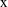
When $PK and $ERROR records are
present, certain labels may not be used at all as data item
labels. These are: the labels for the basic and additional
PK parameters for the pharmacokinetic model, as listed in
Appendices 1 and 2 (e.g., for ADVAN1 and TRANS2: CL, V, S1,
S2, F1, F0), and specific labels for the arguments of the PK
and ERROR subroutines: IDEF, IREV, N, GG, IRGG, HH, and
G.
5.3. Dropping Data Items via DROP
If no format specification is
included on the $INPUT record, then another synonym, DROP,
may be used with any data item. DROP may be used as a
synonym more than once. It identifies data items to be
dropped (i.e. eliminated) from the NM-TRAN data set by the
Data Preprocessor while constructing the NONMEM data set.
This provides a way to limit the number of data items in the
NONMEM data set and to eliminate non-numeric data items.
6. NONMEM Data Items
6.1. DV Data Item
There must always be a
Dependent Variable data item labeled DV. This is a
value of an observation. There can be only one DV data item
per data record. The position of the DV data item (and the
ones described below) is not important. However, its
position must be the same on all records.
6.2. ID Data Item for Population Data
When the data is from a
population, NONMEM expects the Identification data
item, labeled ID, and expects the data to be organized
into two or more "individual records". An
individual record is a group of contiguous data
records having the same value for the ID data item and
presumably containing data from the same individual. ID data
item values need not be consecutive, increasing, unique, nor
begin with 1. E.g., 3, 5, 6, 10, 3, etc. is a possible
sequence of ID values. Note the two instances of 3 as ID
data item values. As long as these two instances are
separated by different ID data item values (e.g. 5, 6, 10),
they represent different individuals.
6.3. MDV data item
If there are records in an input
data set which do not contain values of observations, then
NONMEM needs to be informed of this fact. This is done using
the Missing Dependent Variable data item labeled MDV.
The values of MDV are:
|
0 |
|
The DV data item of the data
record contains a value of an observation. The record is
referred to as an observation record. |
|
1 |
|
The DV data item of the data
record does not contain a value of an
observation. |
NONMEM 7 limits the number of
observation records per individual record to 250. To change
this limit, see Users Guide III. With NONMEM 7.3, there is
no limit on the number of observation records.
When PREDPP is used, the Data
Preprocessor is able to recognize which records contain
observed values and which do not, and it can supply the MDV
data item if it is not already present in the data set, i.e.
if the label MDV does not occur in the $INPUT record. (When
PREDPP is not used, the Data Preprocessor cannot do
this.)
7. PREDPP Data Items
7.1. TIME Data Item
PREDPP will in general need the
Time data item, labeled TIME. With NONMEM 7.4, the
value of TIME may be negative. With earlier versions of
NONMEM, the value of TIME must be non-negative. Within an
individual record, values of TIME may not decrease.
(Exceptions exist for reset and reset-dose events; see
Section 7.3.) The units are optional (e.g., minutes or
hours), but should be consistent with other units used in
the problem. The TIME of the first event record may be zero
or non-zero. (If non-zero, then PREDPP in effect subtracts
this value from all other TIME values within the same
individual record, so that PREDPP always works with relative
time values.) The Data Preprocessor permits TIME to be
expressed as clock time (e.g., 8:30, representing the time,
half-past 8 o’clock). Such times are converted by the
Data Preprocessor into relative times. Details are given in
Section 10.1 below.
7.2. AMT, RATE, SS, II: Dose-related Data Items
Doses are described using one or
more of these four data items, depending on the kind of
dose. A detailed discussion of these data items and of dose
records in general is deferred to Section 8 below.
7.3. EVID Data Item
When PREDPP is used, all data
records are also called event records. Every event
record must contain an Event Identification data item
identifying the kind of event described by the record, and
labeled EVID. The values of EVID and the five kinds of event
records are:
|
0 |
|
Observation event. This record
contains an observed value (in the DV data item).
Dose-related data items such as RATE and AMT must be 0. |
|
1 |
|
Dose event. This record
describes a dose. The contents of the DV data item are
ignored. |
|
2 |
|
Other event. This record is used
for a variety of purposes. It can be used to obtain a
predicted value at a point in time at which no actual
observation or dose event took place; it can be used to turn
a compartment off or on at a point in time; it can be used
to mark a time at which a change in a physiological data
item (e.g. weight) occurs (as well as give the new value of
the data item). Dose-related data items must be 0. The
contents of the DV data item are ignored. |
|
3 |
|
Reset event. This record is used
to reset the kinetic system at some point in time, without
actually starting a new individual record: time is set to
whatever time appears in the event record, the
amounts in each compartment are set to zero, prior doses are
cancelled, and the on/off status of each compartment is set
to its initial status. It is in all other respects identical
to an other event type record. It is typically used within
an individual record, when the individual had a course of
drug treatment, followed by a wash-out period, followed by
another course of drug treatment. It should appear prior to
the start of the second course. |
|
4 |
|
Reset-dose event. This record
combines EVID types 3 (reset) and 1 (dose). First the system
is reset, and then a dose is introduced. It is in all other
respects identical to an ordinary dose event type
record. |
If only dose and observation
event records are present in the NM-TRAN data set, and if
EVID is not already present in the data set (i.e. EVID does
not appear in the INPUT record), then EVID will be supplied
automatically by the Data Preprocessor. This is what was
done in the examples of Chapter 2. If other or reset type
event records are present in the data set, then the $INPUT
record must include the EVID data item, and the data set
must include the appropriate values for EVID on all
the data records.
7.4. CMT and PCMT Data Items
The Compartment data item
(CMT) and Prediction Compartment data item (PCMT) are
similar. Both contain the number of a compartment in the
model. (Compartments and compartment numbers are discussed
in Chapter 7 and Appendix 1, as are default compartments. It
may help to look at Chapter 7 and Appendix 1 at this time.)
If CMT or PCMT is not defined in the data set (i.e., not
listed in the $INPUT record), or has the value 0 on a given
event record, the appropriate default compartment is used,
except as noted below. This is what was done in the examples
of Chapter 2. The meaning of the two data items depends on
the particular kind of event record.
|
• |
|
Observation event: CMT specifies
the compartment from which the predicted value of the
observation is obtained. PCMT is ignored. When CMT specifies
the output compartment, it is allowed to have a negative
sign (e.g., with the One-compartment model, CMT may be -2).
This signals that after the prediction is computed
the output compartment is to be turned off, i.e. the amount
in the compartment is to be set to zero. The amount remains
zero until the compartment is subsequently turned on. This
is quite useful with urine observations; see Section 9
below.† |
----------
†
This is also permitted with output-type compartments; see
Chapter 12, Section 2.8.
----------
|
• |
|
Dose event: CMT specifies the
compartment into which the dose is introduced. The
compartment is turned on if it was previously off. PCMT
specifies the compartment for which a predicted observation
is computed. This predicted value is not associated with an
observation, but it can be useful because it will appear in
tables or scatterplots. |
|
• |
|
Other event: A positive value of
CMT specifies that the compartment is to be turned on if it
is off. A negative value of CMT specifies that the
compartment is to be turned off if it is on. (If CMT is 0,
no compartment is turned on or off.) PCMT is the same as for
dose events. |
|
• |
|
Reset event: CMT is ignored.
PCMT is the same as for dose events. |
|
• |
|
Reset-dose event: CMT and PCMT
are the same as for dose events. |
7.5. CALL Data Item
The Call data item (CALL)
is used to force a call to either or both of the PK and
ERROR subroutines with the event record when such a call
would not normally occur. A call to the PK or ERROR
subroutine causes the code specified by the $PK or $ERROR
records, respectively, to be executed with the event record.
This is discussed in Chapters 7 ($PK) and 8 ($ERROR).) When
not defined in the data set, CALL is assumed to be 0 always.
The values are:
|
0 |
|
No forced call; PREDPP takes its
normal action. |
|
1 |
|
Force a call to ERROR. |
|
2 |
|
Force a call to PK. |
|
3 |
|
Force a call to both PK and
ERROR. |
|
10 |
|
Force a call to ADVAN9. May be
combined with other values. E.g., the value 12 means
"Force a call to PK and to ADVAN9". |
8. Describing Doses to PREDPP
Doses are described using one or
more of the data items discussed below. A detailed
discussion of the actual kinds of doses that PREDPP
recognizes follows in Section 8.2, including a precise
definition of what is meant by the term "steady-state
dose" (Section 8.2.3). A data item that is not needed
to describe the kinds of doses used in the study need not be
defined in the data set; it will in effect always have the
value 0. Only AMT (Dose amount) was used in the examples of
Chapter 2, for example. The values of dose-related data
items should be 0 for non-dose events and for those dose
events to which they are not relevant.
8.1. Dose-related Data Items
AMT data item
The Amount data item
(AMT) gives the amount of a bolus dose or of an infusion of
finite duration. This amount should be a positive
number.
RATE data item
The Rate data item (RATE)
gives the rate of an infusion. This rate should be a
positive number. (Negative values are discussed in Chapter
12, Section 2.3.)
SS data item
The Steady-state data
item (SS) can take four values.
|
0 |
|
This record does not describe a
steady-state dose. |
|
1 |
|
This record describes a
steady-state dose. If this is not the first event record for
the individual, then the system is first reset as if by a
reset event record (except that the on/off status of the
compartments is unchanged from what it was prior to the
event record and the time on the event record must not be
less than the time on the previous event record). The
compartment amounts are then computed using steady-state
kinetic formulas. |
|
2 |
|
This record describes a
steady-state dose. No reset of the kinetic system occurs.
Compartment amounts are computed using steady-state kinetic
formulas and are then added to the amounts already present
at the event time. The use of SS=2 will be discussed further
in Section 8.2.7, below. |
|
3 |
|
This record describes a
steady-state dose. It is exactly like a steady-state dose
with SS data item = 1, except that existing compartment
amounts and derivatives are retained and used as initial
estimates. The computed steady-state levels replace these
compartment amounts and derivatives. This value of SS may be
specified only with SS6 and SS9 (the General Nonlinear
Models). |
II data item
The Interdose Interval data
item labeled II gives the time between implied doses
(see Section 8.2.3 and Chapter 12, Section 2.4). For a
steady-state infusion, it should be 0. For other
steady-state doses, it should be a positive number whose
units are the same as the TIME data item.
8.2. Different Kinds of Doses
Any of the doses described here
may be introduced into any compartment of the model except
the output compartment. Examples are given below that are
fragments of data records, identifying the data items of
interest and showing their contents on the dose record. The
units of various data items are presumed to be appropriate
for some actual data.
8.2.1. Instantaneous Bolus Doses
All the examples in Chapter 2
involve instantaneous bolus doses, which we shall refer to
simply as bolus doses. (There is also such a thing as a
"zero-order bolus dose", see Chapter 12, Section
2.3.) These are dose records having AMT>0, RATE=0 and
SS=0. (Recall that if RATE and SS are not defined on the
$INPUT record, they are effectively 0.) If the $PK record
computes a bioavailability fraction parameter for the
compartment into which the dose is introduced, then the
contents of the AMT data item is multiplied by the current
value of this parameter before the amount is added to the
compartment. A bolus dose enters the dose compartment
immediately; the predicted (scaled) amount in the dose
compartment, if displayed in a table or scatterplot, will
include the dose.
Example:
TIME AMT
4. 10.
This is a dose of 10 to be added to the default dose
compartment at time 4.
A bolus dose to the central
compartment might be interpreted as an IV bolus dose; to the
depot it might be an oral tablet; to a peripheral
compartment it might be an intra-muscular injection.
8.2.2. Infusions
Infusions are doses having
AMT>0 and RATE>0. The duration of the infusion is
computed by PREDPP by dividing the AMT by the RATE. As with
bolus doses, AMT is first multiplied by the bioavailability
parameter for the dose compartment, if any. There is no
explicit "end of infusion" record. Drug amounts in
the system cannot be affected in a detectable way at the
time an infusion begins by any drug introduced by the
infusion; the predicted (scaled) amount in the dose
compartment, if displayed in a table or scatterplot, will
not include the dose. Infusions may overlap. That is,
subsequent dose records may start new infusions before old
ones have finished. It is not an error if an
infusion’s duration is so large as to extend beyond
the time of the last event record for the individual; the
remainder of the drug is ignored. A reset or reset-dose
event, or a steady-state dose event with SS=1, will also
terminate any infusions in progress.
Example:
TIME AMT RATE
4. 10. 2.
The duration of the infusion will be computed as 10./2., and
so the infusion, which begins at time 4, will terminate at
time 9. (=4.+5.).
An infusion to the central
compartment might be interpreted as an IV infusion; to the
depot it might be a sustained release tablet; to a
peripheral compartment it might be an implant or skin patch
which releases drug at a known constant rate. It is possible
for NONMEM-PREDPP to estimate the input rate of a
constant-rate drug delivery system (see Chapter 12, Section
2.3).
8.2.3. Steady-State Doses
A steady-state dose can be
regarded as the last one of a series of doses just like the
one specified in the dose event record, which have been
given at a regular interdose interval since time
, and such that they have led to a steady-state periodic
pattern of drug amounts in the system by the time this last
dose has been administered. The doses of similar kind that
precede it are called implied doses, because their
existence is not described by separate dose records in the
data set, but rather is implied by the description of the
single steady-state dose. By stipulating that a dose is a
steady-state dose, the user instructs PREDPP to update the
drug amounts in the system at the time the dose is given by
using steady-state kinetic formulas. This can take less
computational time than using separate dose records to
describe the implied doses and using transient kinetic
formulas to advance the system from one dose time to the
next (as well as requiring fewer dose records). The formulas
used to compute the steady-state amounts at the time the
steady-state dose is introduced use the values of the basic
and additional pharmacokinetic parameters in effect at this
time; any values in effect at earlier times are ignored.
Moreover, when using a steady-state dose, the user is
assuming that under reasonable values of the pharmacokinetic
parameters, steady-state is in fact effectively reached by
the time the dose is introduced; PREDPP does not check this
assumption. The output compartment must be off when a steady
state dose record is encountered in the data set.
(The Model Event Time (MTIME)
feature described in Chapter 12 does not apply during
steady-state computations. The Absorption lag (ALAG) feature
described in Chapter 12 does apply. See Guide VI, Chapter V,
Notes 3 and 4.)
8.2.4. Steady-State with Multiple Bolus Doses
These are dose events having
AMT>0, RATE=0, SS=1, and II>0. The II data item
(interdose interval) tells how many time units apart the
doses were given. As with non-steady-state bolus doses, AMT
is first multiplied by the bioavailability parameter for the
dose compartment, if any.
Figure 6.3 shows how drug levels vary with time. The
concentration-time profiles over each interdose interval
look the same since, in principle, there is an
infinite number of implied doses.
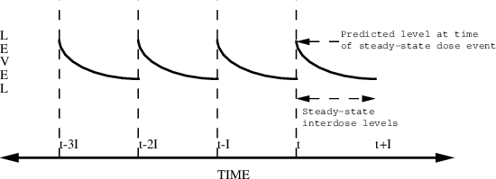
Figure 6.3. Steady-state
with multiple bolus doses. The dose is given at time t. The
interdose interval is I. Steady-state levels can be
predicted between times t and t+I.
Example:
TIME AMT SS II
8 10. 1 12
Here, an infinite number of bolus doses, 10 units each, are
assumed to have been given 12 hours apart, with the last of
these given at time 8AM, at which time steady-state is
reached. The fact that TIME is 8 has no effect on the
computed amounts, but is important in relation to the
records that follow. Steady-state levels can be predicted at
any time between the time on the dose record (8) and the end
of the succeeding interdose interval (12) (provided there
are no further doses introduced during this
interval). If another (steady-state or
non-steady-state) dose just like the steady-state one
is introduced at time 20, then predictions in the interdose
interval following this time will also be steady-state
levels.
8.2.5. Steady-State with Multiple Infusions
These are dose events having
AMT>0, RATE>0, SS=1, and II>0. Each such event
describes the last of a series of regularly spaced
infusions, all of the same amount and rate. As with a
non-steady-state infusion, the duration of each infusion is
given by AMT/RATE. The bioavailability fraction applies to
each infusion of the series.
Figure 6.4 shows how drug levels vary with time. The
concentration-time profiles over each interdose interval
look the same since, in principle, there is an
infinite number of implied doses.
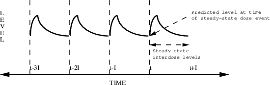
Figure 6.4. Steady-state
with multiple infusions. The dose is given at time t. The
interdose interval is I. Steady-state levels can be
predicted between times t and t+I.
Example:
TIME AMT RATE SS II
16 10. 5. 1 6
Here, infusions, each 10 units and of duration 2 (=10/5),
are assumed to have been given 6 hours apart, with the last
of these started at time 4PM, at which time steady-state is
reached. The daily dose times were 4 AM, 10 AM, 4 PM, and 10
PM. Again, the value of TIME has no effect on the computed
amounts but is important in relation to the records that
follow. Steady-state levels can be predicted between times
16 (4 PM) and 22 (10 PM) (provided there are no further
doses introduced during this interval).
8.2.6. Steady-State with Constant Infusion
These are dose events having
AMT=0, RATE>0, SS=1, and II=0. Such an event consists of
infusion with the stated rate, starting at time
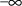
, and ending at the time on the dose event record.
Bioavailability fractions do not apply to these doses.
Figure 6.5 shows how drug levels vary with time.
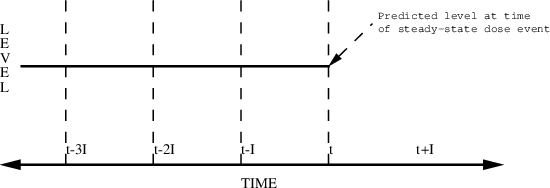
Figure 6.5. Steady-state
with constant infusion. Steady-state level can be predicted
only at time t.
Example:
TIME RATE SS
16 2. 1
Here, a steady-state infusion at rate 2 is specified as
ending at 4 PM. A steady-state level can be predicted only
at this time.
8.2.7. Multiple Steady-State Doses
Doses with SS=2 are exactly like
doses with SS=1. Doses with SS=2 are similar to
non-steady-state doses in that compartment amounts are
computed in two steps. First, compartment amounts are
computed at the time on the dose event record based on the
prior dosing history of the system. Second, steady-state
amounts are computed from the dosing information on the
record and added to the existing compartment amounts. Thus,
if the kinetics are linear, this results in an application
of the superposition principle wherein the amounts in the
system resulting from doses described by dose event records
preceding the time of the steady-state dose are superposed
on the (steady-state) amounts in the system resulting from
the steady-state dose and the implied doses.
As with any steady-state dose,
the steady-state amounts are obtained using the values of
the pharmacokinetic parameters computed from the information
on the steady-state dose record. In the case that SS=2,
though, if these values differ from those computed from the
information on the previous dose record(s), then the
compartment amounts at the time in the steady-state dose
record are not truly steady-state amounts, and the computed
steady-state levels are not valid predictions. PREDPP will
not detect this error. We emphasize that superposition is
only valid with linear kinetic systems; all the kinetic
systems (ADVANs) discussed in this text are linear.
SS=2 records can be used to
achieve the specification of complicated dosing regimens.
For example, Figure 6.6 shows how drug levels vary with time
when two different doses are alternated. In this
illustration, two steady-state doses are specified, each
with interdose interval I and with time between the two
steady-state doses equal to I/2. Even more complex patterns
are possible.
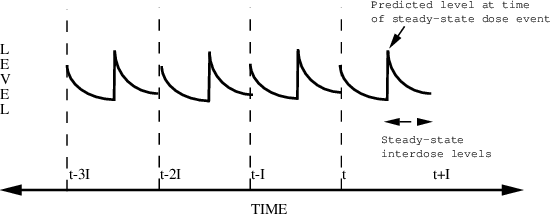
Figure 6.6. Multiple
steady-state doses. Two separate steady-state doses are
given. As pictured, they are each bolus doses, but they do
not have to be. The first dose event record is at time t.
The second dose event record is at time t+I/2. They each
have interdose interval I. Steady-state levels can be
predicted between times t+I/2 and and t+I.
Example:
TIME AMT SS II
8 10. 1 24
20 15. 2 24
This describes the following dosing regimen: a dose of 10
units every morning at 8 AM and a dose of 15 units every
evening at 8 PM (20 hours is 12 hours past 8). Note that
steady-state is not truly established until after the
second dose record; any observation events interposed
between the two dose records will reflect only the first
steady-state dosage (i.e., 10 units every 8 AM). Another way
to achieve the same steady-state is by the following:
Example:
TIME AMT SS II
20 10. 1 12
20 5. 2 24
This describes doses of 10 units every 12 hours, the last of
which is given at 8 PM (i.e. at 8 AM and 8 PM daily), plus
additional doses of 5 units at 8 PM daily. In both examples,
the steady-state levels can be predicted from time 20 hours
to time 32 hours.
8.2.8. Combining Non-Steady-State Doses withSteady-State Doses
Non-steady-state dose records
may appear before, among, or after steady-state dose
records. Such a dose record may occur before a
steady-state dose record to reflect a transient dose given
among a series of regular doses leading to steady-state, but
which is not a part of this series. E.g., a patient who has
been maintained at steady-state takes an extra dose by
mistake shortly before his appointment. A non-steady-state
dose record may occur after a steady-state dose
record in order to continue the pattern of doses beyond the
steady-state dose. Ordinarily, steady-state levels can only
be predicted between
 , the time on the steady-state dose record, and
, the time on the steady-state dose record, and
 , the sum of
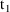
and the interdose interval. If it is not only necessary to
compute a steady-state prediction between
, the sum of
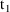
and the interdose interval. If it is not only necessary to
compute a steady-state prediction between
 and
and
 , but also after
, but also after
 , then there must also occur one or more non-steady-state
dose records at
, then there must also occur one or more non-steady-state
dose records at
 ,
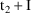
, etc. with doses just like the steady-state dose. (The
"additional doses" data item, labeled ADDL, is
especially useful for this purpose; see Chapter 12, Section
2.4.)
,
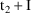
, etc. with doses just like the steady-state dose. (The
"additional doses" data item, labeled ADDL, is
especially useful for this purpose; see Chapter 12, Section
2.4.)
Example:
TIME AMT SS II
8 10. 1 24
20 15. 2 24
32 10. 0 0
44 15. 0 0
Here, the last two records continue the steady-state pattern
of the first two. Steady-state levels may be predicted
between times 20 and 56.
Similarly, a steady-state
constant infusion may be extended with a non-steady-state
infusion. In the example below, steady-state levels can be
predicted from time 0 to time 100.
TIME RATE AMT SS
0 30 0. 1
0 30 3000. 0
9. The Output Compartment: Urine Collections andObservations
In this section we show how
urine collections and observations of urine concentration,
 , can be described. The first-time reader may prefer to
return to this section after reading Section 4.3.3 of
Chapter 7. As an example, consider the one-compartment model
with first-order absorption (ADVAN2). The sequence of events
is:
, can be described. The first-time reader may prefer to
return to this section after reading Section 4.3.3 of
Chapter 7. As an example, consider the one-compartment model
with first-order absorption (ADVAN2). The sequence of events
is:
6:00 AM A bolus dose of 100 is given.
8:00 AM A urine collection is started.
9:30 AM
and urine volume (UVOL) are measured and a new collection is
started.
11:45 AM
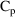
,
, and urine volume are measured.
The $INPUT record is:
$INPUT ID TIME EVID UVOL DV CMT AMT
The data records appear as follows:
ID TIME EVID UVOL DV CMT AMT
1 6.00 1 0 0 1 100
1 8.00 2 0 0 3 0
1 9.50 0 75 .058 -3 0
1 9.50 2 0 0 3 0
1 11.75 0 100 .067 -3 0
1 11.75 0 100 5.80 2 0
Notice that urine collections start with an other type event
record (EVID=2) whose CMT contains the number of the output
compartment, the effect of which is to turn this compartment
on at 8AM, i.e. to begin accounting for the amount of drug
appearing in this compartment from 8AM. Because other type
event records are included, the EVID data item must
be present in the data. The CMT data item must be present in
all event records since it is needed to refer to the output
compartment in at least one record. Care must be taken to
use correct values for the CMT data item; default values
used when this data item is not present are not relevant in
this case. The DV value on the observation record at 9:30 is
the measured
. Because the value of CMT is negative, the output
compartment is also turned off at 9:30. Since the collection
is to continue, the compartment must be explicitly turned on
again (the fourth record). Note that UVOL is recorded on
both observation records at time 11:45. Strictly speaking,
it need only be recorded on the second (
 observation). This point is discussed further in Chapter 7,
Section 4.3.3. See also Chapter 12, Section 7, for a
modification to this data file for output-type
compartments.
observation). This point is discussed further in Chapter 7,
Section 4.3.3. See also Chapter 12, Section 7, for a
modification to this data file for output-type
compartments.
10. The Data Preprocessor
This section discusses in more
detail the ways in which the Data Preprocessor can modify
data, and discusses when a format specification should be
included in the $DATA record.
10.1. Day-time Translation
10.1.1. TIME Data Item
Sometimes the data contains
clock times hh:mm (e.g., the time 1:30 PM is recorded as
13:30). With NONMEM 7.3, clock times may also include the
seconds hh:mm:ss. These times must be converted to
decimal-valued times (e.g., 13.5). The Data Preprocessor can
perform this task when it is processing unformatted data.
Within an individual record, the Data Preprocessor replaces
the TIME value in the first data record with 0, and then
replaces subsequent records’ TIME values with the
relative time (i.e., the number of hours elapsed since the
first record). (The TIME value is also reset to 0 on a reset
(EVID=3) or reset-dose (EVID=4) record.) Here is an example
of relative time calculation:
Contents of original file: Contents of new file:
ID TIME ID TIME
1 9:15 1 0.00
1 9:30 1 0.25
1 10 1 0.75
1 14:40 1 5.42
1 32.5 1 23.25
2 8 2 0.00
2 8.0 2 0.00
2 44:50 2 36.83
2 58 2 50.00 The presence of the colon
":" in the TIME data item of at least one record
of the data causes the Data Preprocessor to convert all the
TIME values to elapsed values. Elapsed times are also called
relative times. Note that recorded data (lines 5, 8,
and 9 of the original file) spanned more than one day. The
user had to add 24 to the TIME values on each day subsequent
to the first to communicate the correct times to the Data
Preprocessor.
10.1.2. DATE Data Item
Here is another way the above
data could have been recorded, using a data item called DATE
whose value is 1 for the first day, 2 for the second day,
and so on. This allows TIME values to be recorded more
naturally using values in the range 0-24.
Contents of original file: Contents of new file:
ID DATE TIME ID DATE TIME
1 1 9:15 1 1 0.00
1 1 9:30 1 1 0.25
1 1 10 1 1 0.75
1 1 14:40 1 1 5.42
1 2 8.5 1 2 23.25
2 1 8 2 1 0.00
2 1 8.0 2 1 0.00
2 2 20:50 2 2 36.83
2 3 10 2 3 50.00 The DATE data item is of
significance only to the Data Preprocessor; NONMEM-PREDPP
will not make use of it. Even if there are no ":"
characters among the TIME values, the existence of a DATE
data item will cause the Data Preprocessor to replace TIME
values by relative times.
10.1.3. Calendar Dates
The Date data item (DATE)
can also be used to record calendar dates in month-day-year
format. Any alphabetic character (e.g., / or -) can be used
to separate the components. Here is a third way the same
example could be recorded:
Contents of original file: Contents of new file:
ID DATE=DROP TIME ID TIME
1 10-1-86 9:15 1 0.00
1 10-1-86 9:30 1 0.25
1 10-1-86 10 1 0.75
1 10-1-86 14:40 1 5.42
1 10-2-86 8.5 1 23.25
2 10-12 8 2 0.00
2 10-12 8.0 2 0.00
2 10-13 20:50 2 36.83
2 10-14 10 2 50.00
This example illustrates
two features. First, when calendar dates are used, the DATE
item should be specified as "DATE=DROP", so that
the data item is omitted from the new data file (see Section
5.3). Otherwise, the alphabetic characters which separate
the components will cause read errors when NONMEM reads the
data. Second, the year value is optional; only month and
date were actually needed. (Within a single individual
record, however, either all dates should specify a year, or
none should.)
Data labels DAT1, DAT2, and DAT3
are also recognized by the Data Preprocessor and can be used
instead of DATE. The label given to the Date data item
describes its format:
DATE month day year
DAT1 day month year
DAT2 year month day
DAT3 year day month
If only one of the three
components is present, it is assumed to be the day†.
----------
† In this case
only, the Date data item may be zero or negative. Day
-1 means one day prior to day 0.
----------
If only two components are
present, they are assumed to be month and day (with DATE and
DAT2) or day and month (with DAT1 and DAT3). The year may be
omitted or given as 1, 2, 3, or 4 digits.
10.1.4. Converting Hours to Days and More GeneralConversions
The units of the relative TIME
values resulting from the Data Preprocessor’s day-time
translation are hours. If the correct units for relative
time should be days, then the TRANSLATE option of the $DATA
record may be used to request that hours to be converted to
days. For example,
$DATA filename
TRANSLATE(TIME/24)
or
$DATA filename TRANSLATE(TIME/24.000)
With the former, values of TIME
have two significant digits, e.g., xxxx.xx. With the latter,
they have three significant digits, e.g., xxxx.xxx.
With NONMEM 7.3, more general
conversions are possible. Any value may be given for
dividing time and II values, and any precision may be
requested. Examples are:
$DATA filename
TRANSLATE(TIME/1.0000)
or
$DATA filename
TRANSLATE(TIME/1/4)
for formatting times in FDATA with 4 digits to the right of
the decimal. Another example is
$DATA filename
TRANSLATE(II/0.01/6)
which divides II values by 0.01, and writes 6 digits to the
right of the decimal for the II data item. See Guide VIII
for more information.
10.1.5. The Year 2000 - LAST20
The user may supply 4 digit
years starting (e.g.) "19" and "20", and
such dates are processed correctly. (Three digit years
"000"-"999" are permitted, but would
represent exactly those years, and should not normally be
used.) If the year is omitted, it is assumed to be a
non-leap year. A problem arises when the year supplied, but
has only 1 or 2 digits. Such years are assumed by default to
be in the 1900’s. If this is not a correct assumption,
two errors may be made by the Data Preprocessor when
computing relative times. First, 1900 was not a leap year,
but 2000 is a leap year. Hence, if consecutive dates in a
data file are 02-28-00 and 03-01-00 (signifying February 28
and March 1, 2000), an elapsed time of 24 hours, rather than
48 hours, is computed. Second, if consecutive dates have
years 99 and 00, the computed elapsed time is negative and
an error message is generated.
With NONMEM V and later versions
there is a constant LAST20. The value of LAST20 is a 2 digit
number nn that specifies the highest 2-digit year that is
assumed to be in the 21st. century, i.e., to represent 20nn
rather than 19nn. For example, with LAST20=50, then
1 and 2 digit years are interpreted as follows:
00-50 represents 2000-2050
51-99 represents 1951-1999
The elapsed time between
02-28-00 and 03-01-00 is calculated to be 48 hours, and the
elapsed time calculated between the years 99 (1999) and 00
(2000) is positive.
There are two ways that a value
for LAST20 can be specified.
First, when NM-TRAN is
installed, a value is given to constant LAST20 in
TrGlobal.f90 (in the resource directory): DATA LAST20
The default value of this constant in the distribution
medium is 50. Please ask your system support department if
they modified the LAST20 constant when NM-TRAN was
installed.
Regardless of what value was
assigned to the LAST20 constant in TrGlobal.f90, there is an
option LAST20 of the $DATA record that may be used to
specify the value of the constant for the current run. For
example:
$DATA filename
LAST20=50
This insures that all 1 and 2
digit years are interpreted as above (2000-2050;
1951-1999).
10.1.6. Leap Year Warning - LYWARN
There may be two circumstances
such that 1 or 2 digit years are recorded as 00, 01, ...
(equivalently, 0, 1, ...). First, these may represent the
years 2000, 2001, etc. Or, they may represent years 0, 1,
etc., of a study. Suppose the latter is the case, and that
none of the years of the study was a leap year. Then if
LAST20 is set to a value greater than -1, the year 0 is
assumed incorrectly to be the leap year 2000, and elapsed
times may be computed incorrectly. The Data Preprocessor
issues a warning message under the following
circumstances:
|
1) |
|
The year is recorded as
"00" or "0", |
|
2) |
|
The value of LAST20 is greater
than -1 by default (so that the year is understood to be
2000), and |
|
3) |
|
The LAST20 option of the $DATA
record was not used to modify LAST20 for this run. |
The warning message is as
follows:
(DATA WARNING 3) RECORD 3, DATA ITEM 3: 01-01-00
THE YEAR IS ASSUMED TO BE 2000 (A LEAP YEAR). IF THIS IS INCORRECT, USE
$DATA’S LAST20 OPTION TO OVERRIDE THE DEFAULT VALUE OF LAST20 IN NMTRAN’S
ABLOCK, OR CHANGE THE DEFAULT: 50
Suppose these warning messages
are appropriate, that is, year "00" (or
"0") should not be a leap year. The LAST20 option
of the $DATA record may be used to specify that such years
are in the 1900’s for the current data set:
$DATA filename
LAST20=-1
A constant LYWARN is defined in
NM-TRAN’s ABLOCK module. The default value of LYWARN
is 1 ("data warning message 3 enabled"). If the
value of LYWARN is set to 0 ("data warning message 3
disabled") and NM-TRAN is recompiled, then the warning
message is suppressed for all runs.
10.2. Interdose Interval (II) Conversion
When the input data is
unformatted and PREDPP is being used, the Interdose Interval
(II) data item is checked for values containing a colon (:).
Any such value is assumed to signal a clock time hh:mm. The
minutes portion is converted to a decimal number containing
as many decimal places as digits in the original. E.g., the
value ":30" is replaced by ".50". This
conversion is performed whether or not day-time translation
is also being done.
10.3. Data Items Generated by the Data Preprocessor
When the data is from a single
individual, the Data Preprocessor will almost always
generate an ID data item‡.
----------
‡ Section 4.2 of
Chapter 12 discusses the L1 data item, which is used to
prevent NM-TRAN from generating an Identification data item
for individual data.
----------
It does this whether or not
PREDPP is used. This is done because, when the data is from
a single individual, the ID data item must take on very
special non-constant values for NONMEM. The generated ID
data item is given the label ".ID." (i.e., ID
surrounded by dots). If this data item is to be shown in any
NONMEM output (e.g., in a table), it must be referred to on
subsequent NM-TRAN records by this label.
When PREDPP is used, the Data
Preprocessor will always generate the required EVID data
item if it is not already listed on the $INPUT record. (This
was discussed in Section 7.3 above.)
When PREDPP is used, the Data
Preprocessor will always generate the MDV (Missing Dependent
Variable) data item if it is not already listed on the
$INPUT record.
These data items are generated
by the Data Preprocessor whether or not a format
specification was coded on the $INPUT record. They are
appended to the end of each data record.
10.4. When Must a Format Specification be Included orOmitted?
When coding the $DATA record,
you will need to decide whether to include a FORTRAN format
specification describing the data file or to omit it and let
the Data Preprocessor construct it. Here are some guidelines
in making this decision.
A format specification is
required when:
Some data
values are left blank on some data records, without having
the value 0 or . (or a pair of commas) to hold the place of
the missing value.
Some data
values are adjacent on some data records; they are not
separated by a space or a comma.
The data
records span multiple physical records; that is, the
character / is needed in the format specification. (The Data
Preprocessor may generate such a format specification for
the NONMEM data set; we are speaking here of the NM-TRAN
data set.) The NOOPEN option of $DATA is used.
A format specification should
not be present when:
The $INPUT
record includes DROP as a data item label or synonym.
Day-time
translation is desired.
II conversion
is desired.
Commas are used
to separate the data items.
The data values
are not lined up into columns with uniform width, so that no
format specification can be written to describe the
file.
The
IGNORE/ACCEPT option of $DATA is used to drop records from
the data set.
Many data files do not fall in
either category. A format specification is optional for such
files.
NM-TRAN performs more checks on
the data file when there is no format specification. Some
features of NM-TRAN are the same with or without a format
specification.
Comment records may be used.
NM-TRAN appends EVID, MDV, .ID., as needed.
NM-TRAN checks for blank records, and the BLANKOK option of
$DATA may be used.
NM-TRAN gives a warning for unusual characters in the data
file.
NM-TRAN counts records and supplies the count in FCON.
10.5. Skipping Data Items
It is always possible to omit
(skip) data items that are not of interest for a given
NONMEM run. When a format specification is coded, two things
must be done: first, replace the data item’s
specification by an "X" specification (e.g.,
replace F8.0 by 8X) and second, delete the data item’s
label from the $INPUT record. When no format specification
is coded, all that need be done is to replace the data
item’s label in the $INPUT record by DROP (or include
DROP as a synonym).
TOP
TABLE OF CONTENTS
NEXT